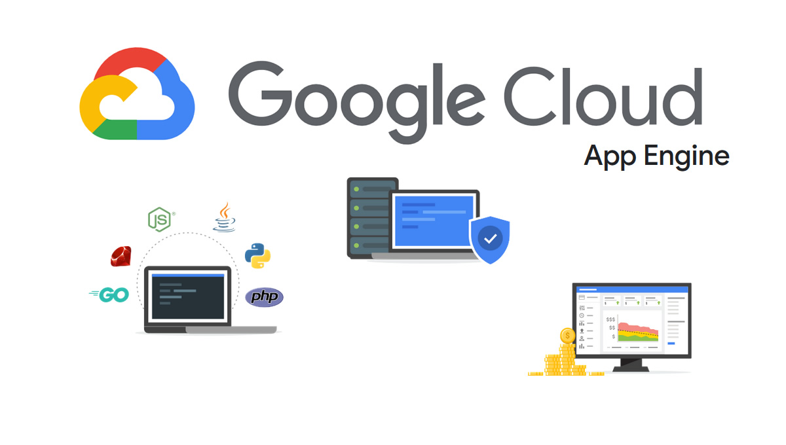
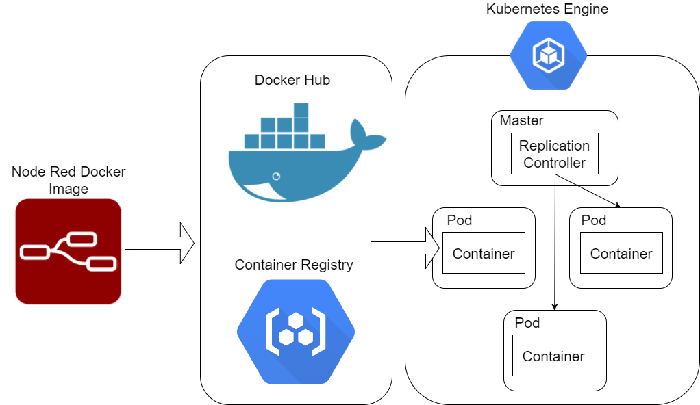
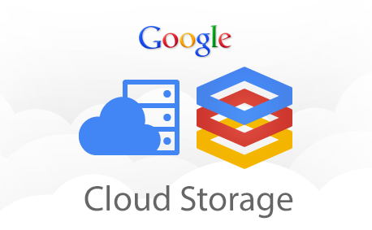

Google Cloud Services
 Compute Engine
Compute Engine App Engine
App Engine Cloud Storage
Cloud Storage Cloud Run
Cloud RunCompute Engine
Google Cloud Compute Engine is an Infrastructure-as-a-Service (IaaS) offering that provides virtual machine instances for running applications. It allows you to create and customize virtual machines on demand, providing flexibility, scalability, and control over your computing resources. With Compute Engine, you can easily manage your virtual machines, configure networking, and control access to your instances. The benefits of using Compute Engine include high performance, global scalability, and cost-effective pricing models. However, managing virtual machines requires technical expertise, and improper configurations can lead to security and performance issues.

Compute Engine is a virtual machine (VM) hosting service provided by Google Cloud. It allows you to create and run virtual machines on Google's infrastructure. Compute Engine offers scalable and flexible computing power, allowing you to easily scale your infrastructure based on your needs.
With Compute Engine, you have full control over your virtual machines. You can choose from a variety of machine types, each optimized for different workloads. Whether you need general-purpose computing, memory-intensive tasks, or high-performance computing, Compute Engine has the right machine type for you.
Setting up virtual machines on Compute Engine is straightforward. You can create instances from scratch or use preconfigured templates, called images, to get started quickly. Compute Engine provides a wide range of operating system images, including popular Linux distributions and Windows Server. You can also bring your custom images or use third-party images from the Google Cloud Marketplace.
Compute Engine offers advanced networking capabilities to ensure secure and efficient communication between your virtual machines. You can create virtual private clouds (VPCs) and configure firewall rules to control inbound and outbound traffic. Additionally, Compute Engine integrates with Google Cloud Load Balancing to distribute traffic across your virtual machines and maintain high availability.
To manage your virtual machines, Compute Engine provides a web-based console, a command-line interface (CLI), and APIs for automation. You can easily start, stop, and restart instances, as well as resize them based on your resource requirements. Compute Engine also offers features like automatic scaling and instance groups for handling fluctuating workloads and improving availability.
Compute Engine provides high-performance storage options for your virtual machines. You can attach persistent disks to your instances for durable and reliable storage. Persistent disks are network-attached disks that can be resized and dynamically attached to different instances. For faster and scalable storage, Compute Engine offers SSD persistent disks and local SSDs.
Google Cloud's global infrastructure ensures that your virtual machines are distributed across multiple regions and zones, providing high availability and data redundancy. You can choose the regions and zones where you want your virtual machines to be located, depending on your users' proximity and regulatory requirements.
While Compute Engine offers great flexibility and control, it's important to manage your virtual machines effectively to ensure security and cost optimization. You should regularly update your operating systems and applications, configure appropriate access controls, and monitor the performance of your instances. Google Cloud provides monitoring and logging tools, such as Google Cloud Monitoring and Stackdriver Logging, to help you track the health and performance of your virtual machines.
In summary, Compute Engine is a powerful and flexible infrastructure-as-a-service (IaaS) offering that allows you to create and manage virtual machines on Google Cloud. Whether you need to run small applications or large-scale workloads, Compute Engine provides the scalability, control, and per.formance required to meet your computing needs.
App Engine
Google Cloud App Engine is a fully managed Platform-as-a-Service (PaaS) that allows you to build and deploy applications without worrying about infrastructure management. It offers automatic scaling, load balancing, and built-in services for data storage, caching, and more. With App Engine, you can focus on developing your applications and let Google Cloud handle the underlying infrastructure. The benefits of using App Engine include faster development cycles, reduced operational overhead, and automatic scaling to handle traffic fluctuations. However, the limitations of the platform and the need for adherence to platform-specific guidelines can sometimes pose challenges during application development.
App Engine supports multiple programming languages, including Java, Python, Node.js, Go, and more. You can choose the runtime environment that best suits your application's requirements. It also integrates with other Google Cloud services, such as Cloud Datastore for NoSQL database storage and Cloud Pub/Sub for event-driven architectures.
Kubernetes Cluster
Google Kubernetes Engine (GKE) is a managed Kubernetes service that simplifies the deployment, management, and scaling of containerized applications. Kubernetes is an open-source container orchestration platform that enables you to automate the deployment, scaling, and management of containerized applications. With GKE, you can create and manage Kubernetes clusters with ease, taking advantage of Google Cloud's infrastructure and integrated tools. The benefits of using GKE include high availability, auto-scaling, and seamless integration with other Google Cloud services. However, managing Kubernetes clusters requires knowledge of containerization concepts and can involve complex configuration and troubleshooting tasks.
Kubernetes provides a declarative approach to application deployment and management. You can define your application's desired state using Kubernetes manifests, and the platform will ensure the desired state is maintained. GKE offers features such as automatic scaling, rolling updates, and health checks to ensure reliable and efficient operation of your applications.
Cloud Storage
Google Cloud Storage is a scalable and durable object storage service that allows you to store and retrieve large amounts of data. It provides secure and cost-effective storage options for a wide range of use cases, including backup and restore, content distribution, and analytics. With Cloud Storage, you can store and access data globally, benefit from automatic data redundancy and integrity checks, and easily integrate with other Google Cloud services. The benefits of using Cloud Storage include high durability, scalability, and fine-grained access controls. However, data transfer costs and access latency can be potential considerations, and improper data management practices can result in increased costs and security risks.
Cloud Storage offers different storage classes to optimize cost and performance based on your data access patterns. You can choose between Standard, Nearline, Coldline, and Archive storage classes, depending on your requirements for data availability and retrieval times. Additionally, Cloud Storage integrates with other Google Cloud services, such as BigQuery for analytics and Cloud CDN for content delivery.
Cloud Run
Google Cloud Run is a fully managed serverless execution environment for containers. It allows you to run stateless HTTP-driven containers on a fully managed environment or in your own Google Kubernetes Engine cluster. Cloud Run automatically scales your containers based on incoming request traffic, so you only pay for the resources you use. It supports containers built with popular languages and frameworks, such as Docker and Knative.
With Cloud Run, you can build and deploy microservices and APIs quickly and easily. It abstracts away the underlying infrastructure, allowing you to focus on writing code and delivering value. Cloud Run offers seamless integration with other Google Cloud services, such as Cloud Build for CI/CD pipelines and Cloud Monitoring for observability.
Cloud Filestore
Google Cloud Filestore is a managed file storage service for applications that require a traditional file system interface. It provides a fully managed Network Attached Storage (NAS) solution with high performance and scalability. With Cloud Filestore, you can easily share files between instances or clusters of virtual machines and achieve consistent file access from multiple compute instances. The benefits of using Cloud Filestore include high performance, data durability, and seamless integration with other Google Cloud services. However, it is primarily designed for Linux-based workloads and may not be suitable for all use cases.

Cloud Filestore offers two performance tiers: Standard and Premium. The Standard tier provides a cost-effective solution for workloads with moderate performance requirements, while the Premium tier offers higher performance and lower latency for latency-sensitive applications. It integrates with other Google Cloud services, such as Compute Engine and Kubernetes Engine, enabling you to build scalable and reliable applications.